4.1 Llama3-1
一、概要
Llama3.1基础模型的下载，进行微调、量化和部署及应用。
二、模型下载
2.1. 许可协议
-
信息填写
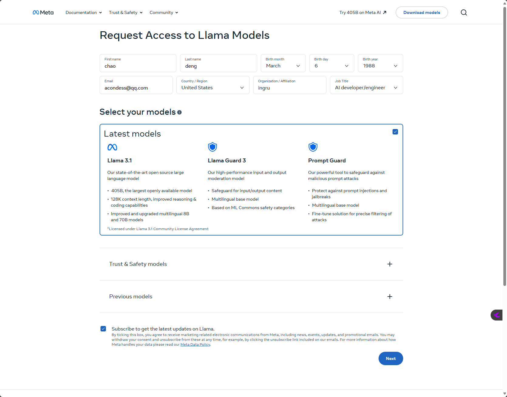
-
许可勾选
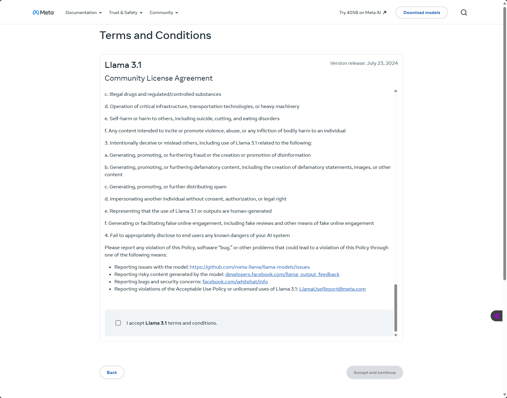
-
获取到验证URL地址(24小时有效)
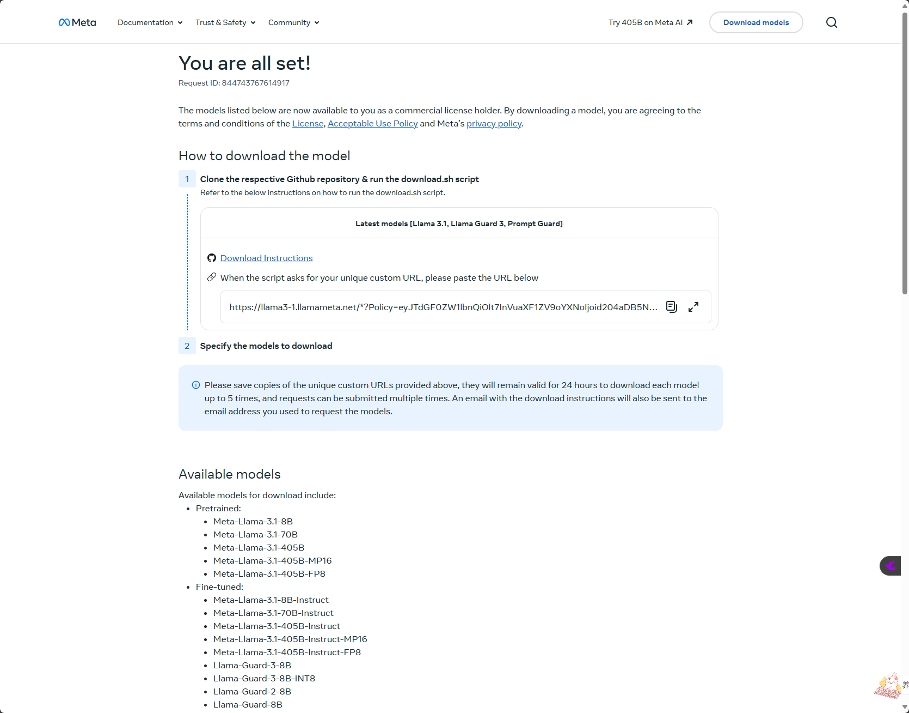
2.2. 源码下载
-
Step1 获取源码
git clone https://github.com/meta-llama/llama-models.git -
Step2 运行download.sh脚本
bash ./download.sh-
注意使用bash 执行 download.sh
-
-
Step3 模型下载-输入验证URL地址
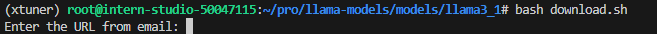
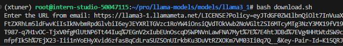
-
Step4 模型下载-选择模型
- meta-llama-3.1-405b
- meta-llama-3.1-70b
- meta-llama-3.1-8b
- meta-llama-guard-3-8b
- prompt-guard
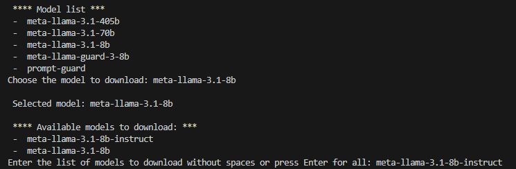
- 需要科学上网
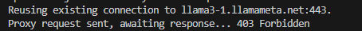
-
Step5 模型下载-模型文件夹结构
── api │?? ├── args.py │?? ├── chat_format.py │?? ├── datatypes.py │?? ├── __init__.py │?? ├── interface.py │?? ├── model.py │?? ├── sku_list.py │?? ├── templates │?? │?? ├── assistant_message.builtin_tool_call.yaml │?? │?? ├── assistant_message.custom_tool_call.yaml │?? │?? ├── assistant_message.default.yaml │?? │?? ├── assistant_message.jinja │?? │?? ├── system_message.builtin_and_custom_tools.yaml │?? │?? ├── system_message.builtin_tools_only.yaml │?? │?? ├── system_message.custom_tools_only.yaml │?? │?? ├── system_message.default.yaml │?? │?? ├── system_message.jinja │?? │?? ├── tool_message.failure.yaml │?? │?? ├── tool_message.jinja │?? │?? ├── tool_message.success.yaml │?? │?? ├── user_message.default.yaml │?? │?? └── user_message.jinja │?? ├── test_tokenizer.py │?? ├── tokenizer.model │?? ├── tokenizer.py │?? └── tool_utils.py ├── download.sh ├── eval_details.md ├── __init__.py ├── LICENSE ├── Meta-Llama-3.1-405B-Instruct-MP16 │?? ├── consolidated.00.pth │?? ├── consolidated.01.pth │?? ├── consolidated.02.pth │?? ├── consolidated.03.pth │?? └── tokenizer.model ├── MODEL_CARD.md ├── README.md ├── requirements.txt └── USE_POLICY.md
2.3. HF下载
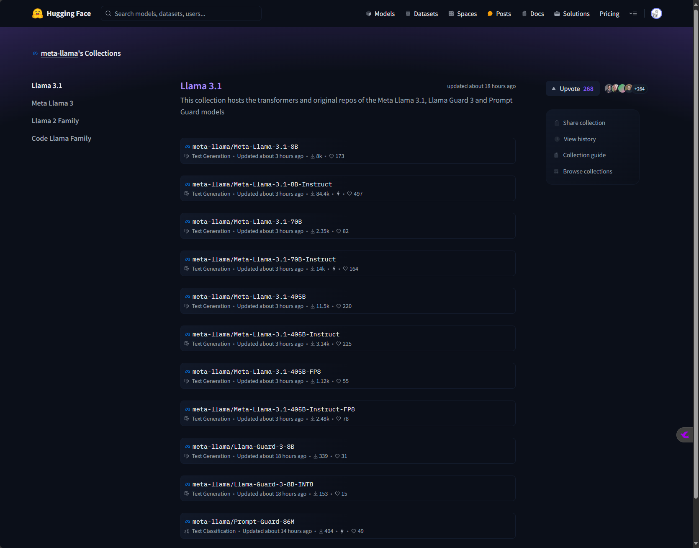
- Step1 许可信息填写
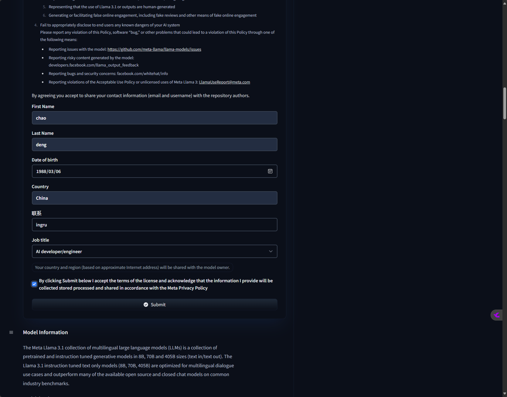
- 等待许可通过
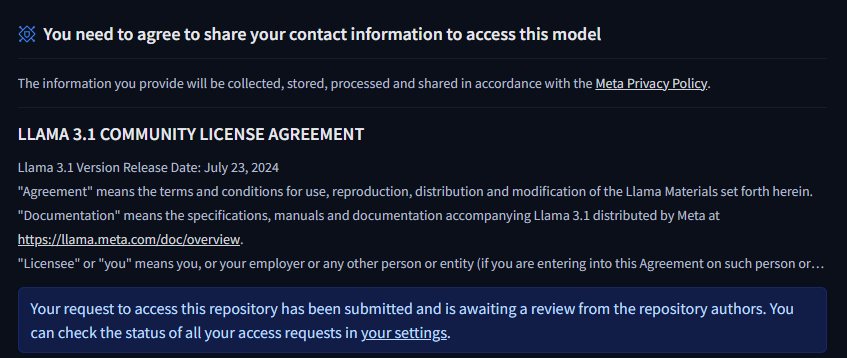
2.4 ollama 下载
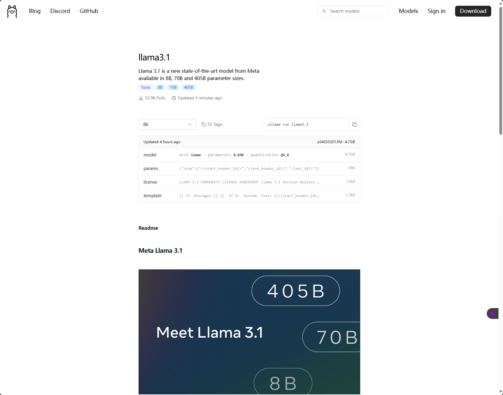
三、快速体验
3.1 应用快速体验
3.2 模型快速体验
3.2.1 ollama 本地运行量化llama3.1模型
-
选取量化模型
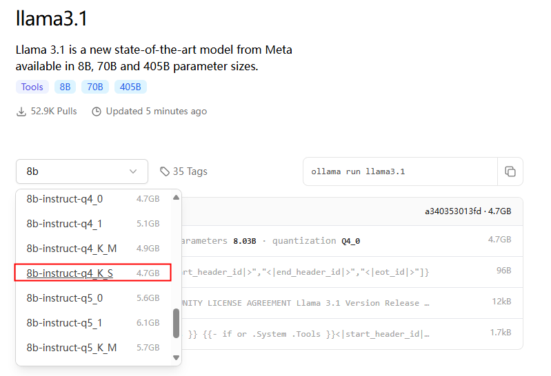
-
复制对应量化模型的命令
ollama run llama3.1:8b-instruct-q4_K_S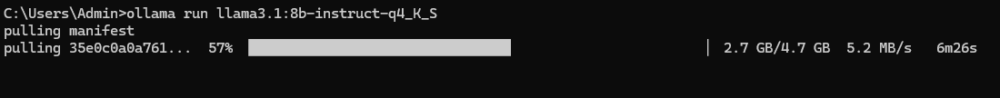
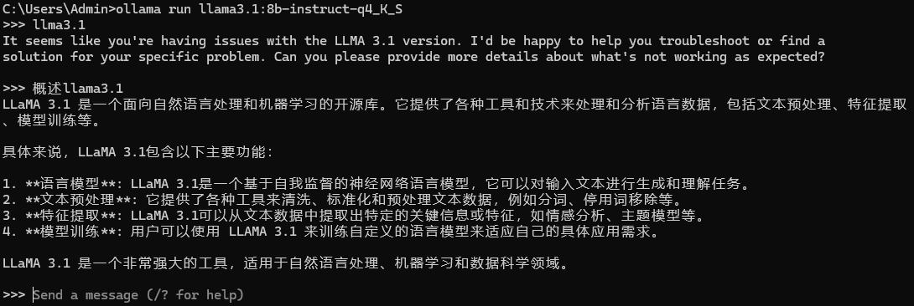
四、微调
五、量化
六、部署及应用
魔搭
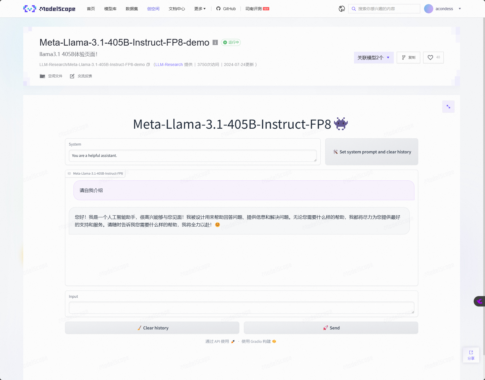
-
源码：
git clone https://www.modelscope.cn/studios/LLM-Research/Meta-Llama-3.1-405B-Instruct-FP8-demo.git
七、论文解读
链接地址 the-llama-3-herd-of-models
7.1 论文摘要
> Modern artificial intelligence (AI) systems are powered by foundation models. This paper presents a new set of foundation models, called Llama 3. It is a herd of language models that natively support multilinguality, coding, reasoning, and tool usage. Our largest model is a dense Transformer with 405B parameters and a context window of up to 128K tokens. This paper presents an extensive empirical evaluation of Llama 3. We find that Llama 3 delivers comparable quality to leading language models such as GPT-4 on a plethora of tasks. We publicly release Llama 3, including pre-trained and post-trained versions of the 405B parameter language model and our Llama Guard 3 model for input and output safety. The paper also presents the results of experiments in which we integrate image, video, and speech capabilities into Llama 3 via a compositional approach. We observe this approach performs competitively with the state-of-the-art on image, video, and speech recognition tasks. The resulting models are not yet being broadly released as they are still under development.
>现代人工智能 (AI) 系统由基础模型驱动。本文介绍了一组新的基础模型，称为 Llama 3。这是一群原生支持多语言、编码、推理和工具使用的语言模型。我们最大的模型是一个具有 4050 亿个参数和最多 128K 个标记的上下文窗口的密集 Transformer。本文对 Llama 3 进行了广泛的实证评估。我们发现 Llama 3 在大量任务上提供与 GPT-4 等领先语言模型相当的质量。我们公开发布了 Llama 3，包括 4050 亿参数语言模型的预训练和后训练版本，以及我们的 Llama Guard 3 模型，用于输入和输出安全。本文还介绍了将图像、视频和语音功能通过组合方法集成到 Llama 3 中的实验结果。我们观察到这种方法在图像、视频和语音识别任务上与最先进的技术竞争。由于这些模型仍在开发中，因此尚未广泛发布。
> AI总结：Meta AI 近日发布了一系列名为 Llama 3 的基础模型，这些模型是语言模型的集合，能够原生支持多语言、编码、推理和工具使用。Llama 3 中最大的模型是一个拥有 4050 亿参数的密集 Transformer，上下文窗口高达 128K 个 token。
论文对 Llama 3 进行了广泛的实证评估，发现它在众多任务上的表现与 GPT-4 等领先的语言模型相当。Meta 公开发布了 Llama 3，包括 4050 亿参数语言模型的预训练和后训练版本，以及用于输入和输出安全的 Llama Guard 3 模型。
论文还展示了通过组合方法将图像、视频和语音功能整合到 Llama 3 中的实验结果。实验表明，这种方法在图像、视频和语音识别任务上的表现与最先进技术相当。但由于这些模型仍在开发中，尚未广泛发布。
Llama 3 的发布是 Meta 在人工智能领域的一项重大进展，标志着大型语言模型在多语言、编码、推理和工具使用等方面的能力正在不断提升。未来，Meta 将继续探索和开发人工智能技术的应用，为人类社会创造更多价值。
7.2 llama3介绍总结
AI总结：
> Meta发布了迄今为止最强大的开源模型Llama 3.1，其405B版本在能力上媲美最先进的闭源模型，标志着开源大语言模型进入了一个新时代。
>Llama 3.1 405B 在通用知识、可控性、数学、工具使用和多语言翻译方面都取得了显著进步。它可以用于各种应用场景，例如合成数据生成，模型蒸馏，长篇文本摘要，多语言对话代理和编码助手。
>Llama 3.1 405B 是第一个在规模和能力上与 GPT-4 等闭源模型相媲美的开源模型。该模型在超过 15 万亿个标记上训练，使用了超过 16000 个 H100 GPU。为了提高模型的训练效率和稳定性，Meta 采用了标准的解码器-只 transformer 模型架构，并进行了迭代式后训练过程，包括监督微调和直接偏好优化。
>Meta 还发布了 Llama 3.1 8B 和 70B 版本，它们支持多语言，上下文长度扩展到 128K，并具有更强大的推理能力。此外，Meta 还推出了 Llama Guard 3 和 Prompt Guard 等安全工具，以确保模型的负责任使用。
>Meta 致力于打造一个完整的 Llama 系统，该系统包括多个组件，例如外部工具调用，安全模型和提示注入过滤器。Meta 还发布了 Llama Stack API 的请求意见，希望能够为第三方项目提供一个标准接口，以便更容易地利用 Llama 模型。
M
>eta 相信 Llama 3.1 的发布将推动开源社区的创新，并为开发者提供更多工具来构建新的应用。Meta 期待看到社区利用 Llama 3.1 构建更多有用的产品和体验。